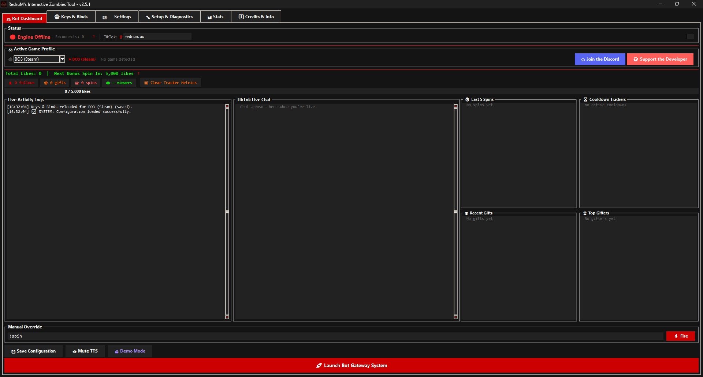

Free TikTok Live Interaction Tool for COD Zombies.
Connects your TikTok LIVE stream directly into Call of Duty Zombies. Viewer likes, gifts, and chat commands trigger real in-game effects while you play.
- Likes earn points and bonus spins
- Gifts fire in-game actions instantly
!spinin chat rolls a weighted effect wheel- Every 5,000 likes triggers an automatic bonus spin

Three games, one bot.
The app auto-detects which game is running and keeps a separate configuration per title; switch mid-session without losing anything.
Black Ops 3 Zombies
Black Ops 2 Zombies
Black Ops 1 Zombies
Built for actually running a stream.
A handful of the highlights; the full list lives in the README.
Gift Routing Matrix
Maps any TikTok gift to any in-game action. Unmatched gifts received on stream can be added in one click.
Smarter TTS
Layers in stacked reactions, gifter streak callouts, hourly callouts, follow milestones, and rare 1-in-100 spin lines.
OBS Overlay
Writes live stats - likes, viewers, gifts, spins, top gifter, recent chat, even Spotify now-playing - straight to text files for OBS Text Sources.
One-Click Setup
Auto-detects your install paths and exports GSC/binds files with a single click - no digging through folders.
Stats & Leaderboards
Tracks session history, personal bests, and a Lifetime Top Gifters leaderboard automatically.
Achievements
Unlocks 20 during a session, with live TTS callouts the moment your viewers earn them.
Backup & Restore
Exports your entire configuration - keybinds, gift matrix, everything - and restores it in seconds after a reinstall.
20 Themes
Includes AMOLED Black, plus a custom accent colour picker and font size scaling.
Demo Mode
Simulates a full live session without actually being live - great for testing or recording showcase footage.
Inside the tool.
Use the arrows to browse, click a shot to view it full screen.
Live in three steps.
Full per-game setup (mods, GSC files, binds) is in the README; the tutorial video below walks through it end to end.
-
Download & install
Grab the installer from GitHub Releases. It sets up paths, copies GSC/binds files to your game folders, and offers a Defender exclusion.
-
Run Setup & Diagnostics
Auto-detects your install paths, exports binds/GSC with one click, and includes a keypress test tool to confirm everything works.
-
Go live, then launch
Start your TikTok LIVE first, then hit Launch. Likes, gifts, and
!spinstart driving the game immediately.